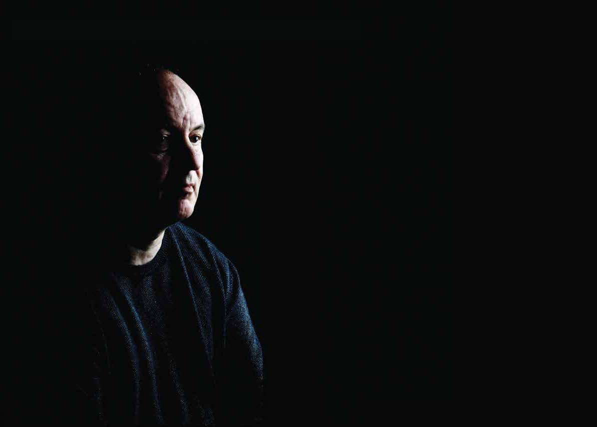

Monk's Music

LOUTH CONTEMPORARY MUSIC SOCIETY PRESENT MONK'S MUSIC AND OTHER WORKS BY ALEXANDER RASKATOV PERFORMED BY THE CARDUCCI QUARTET AND ROBERT MACDONALD, BASS, ALEXANDER RASKATOV, PIANO AND ELENA VASSILIEVA, SOPRANO Russian composer Alexander Raskatov's monumental work for string quartet and bass voice, Monk's Music: Seven Words by Starets Silouan, chosen as one of the classical highlights of 2013 in the Irish Times, receives its second performance at Drogheda Arts Festival 2014.
Monk's Music is music that transcends its own technical brilliance to become a truly illuminating thing to experience; here, Raskatov's music itself is a mysterious and seductive country to explore.
"Alexander Raskatov's Monk's Music, a daring revisiting of the shape of Haydn's Seven Last Words. It's so good, I suspect even Haydn would have taken his hat off." Michael Dervan The Irish Times
Saturday 3 May
Venue: St Peters Church of Ireland, Peter St.
Times: 8:00 pm Sat 3 May
Tickets: 10